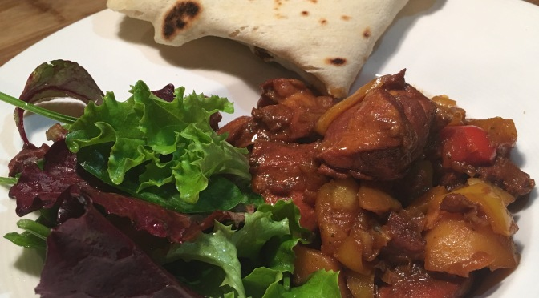

Roti & Stew Chicken Recipe

Description
Roti and stew chicken is a staple West Indian cuisine. This is a meal you can find within walking distance anywhere in Flatbush (Brooklyn).
Ingredients
- 6 organic free range boneless and skinless chicken thighs
- 3 new potatoes
- 1 small red pepper
- 1 small yellow pepper
- 2 shallots
- 20g Demerara sugar
- 50ml water
- 20ml olive oil
- 1 teaspoon stock powder
- Chef Bernie's Very Hot Sauce to taste
Steps
- Cut the chicken into bite size chunks and place in a bowl
- Wash and dice the potatoes, peppers and shallots and add to the chicken with the stock powder and water, mix together with a spoon and put to one side
- Put the sugar and oil into a heated heavy bottomed saucepan and melt the sugar until it starts to caramelise and looks dark brown, taking care remove from the heat cool slightly and add the chicken mix
- Put back on the heat and stir bringing to the boil, simmer for 20 minutes stirring occasionally
- Serve with Roti, or rice ‘n peas adding the hot sauce to taste